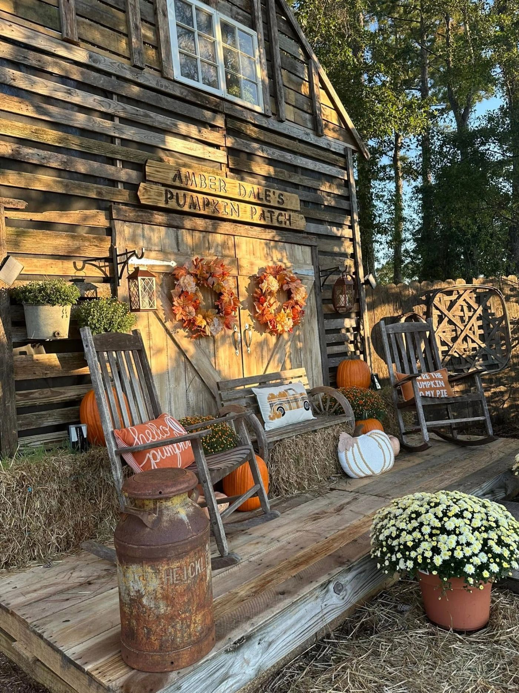
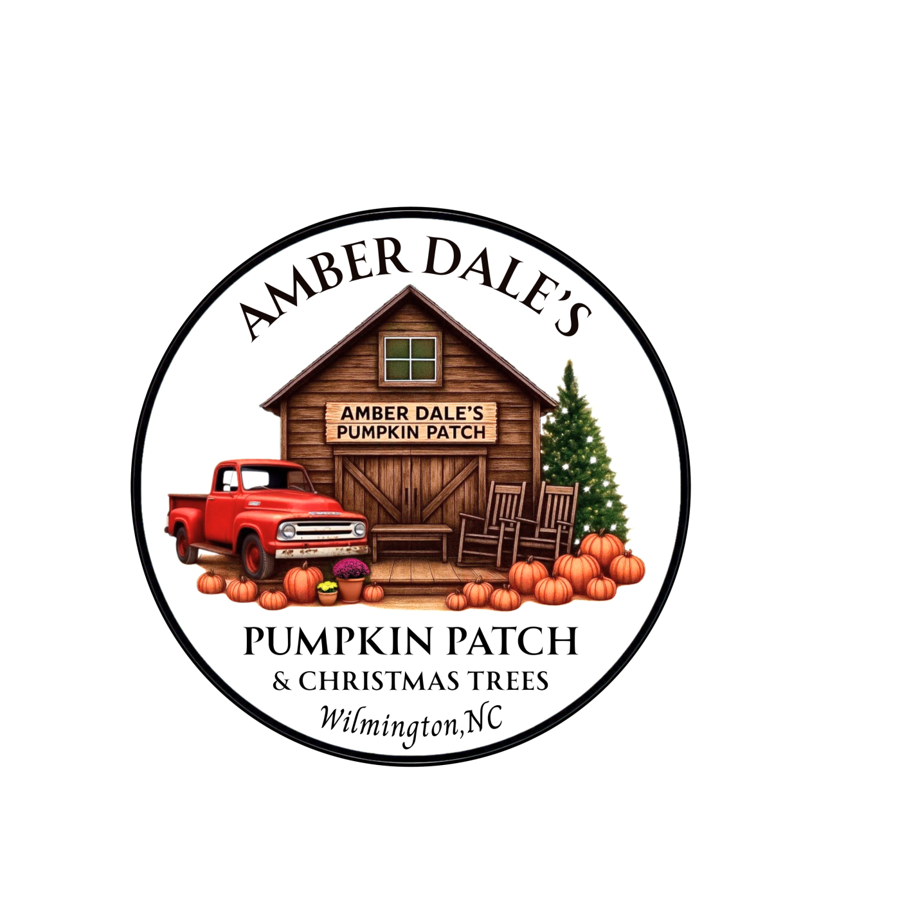
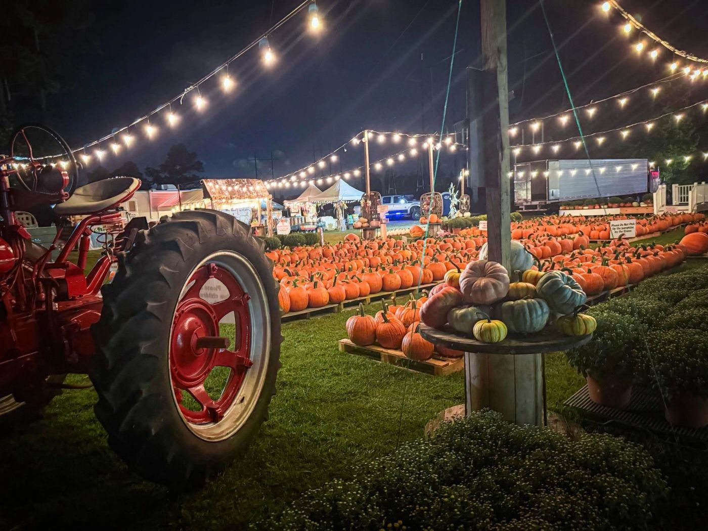
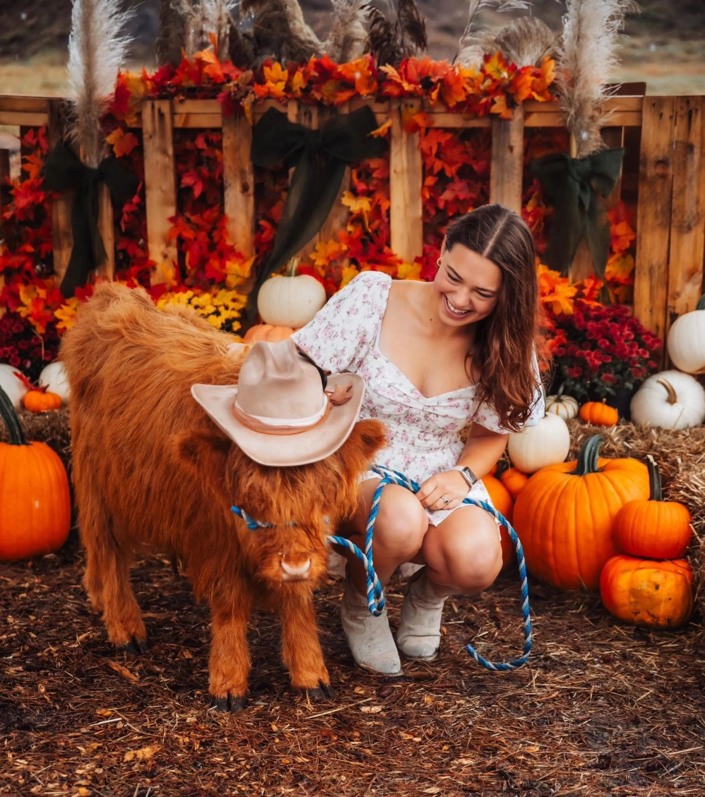
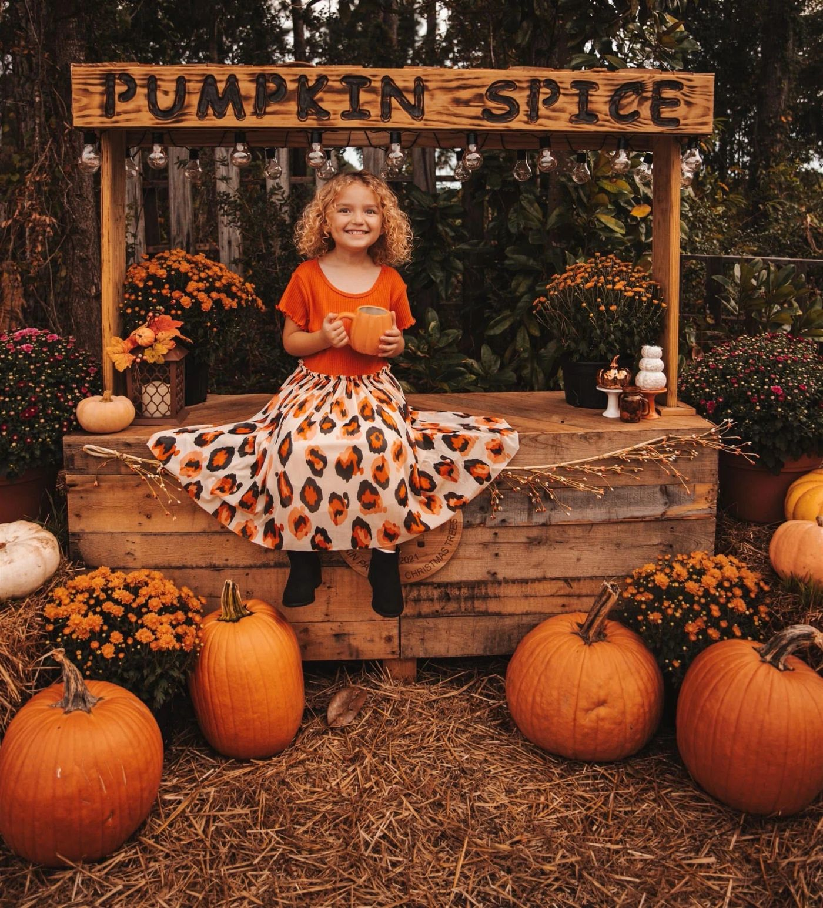
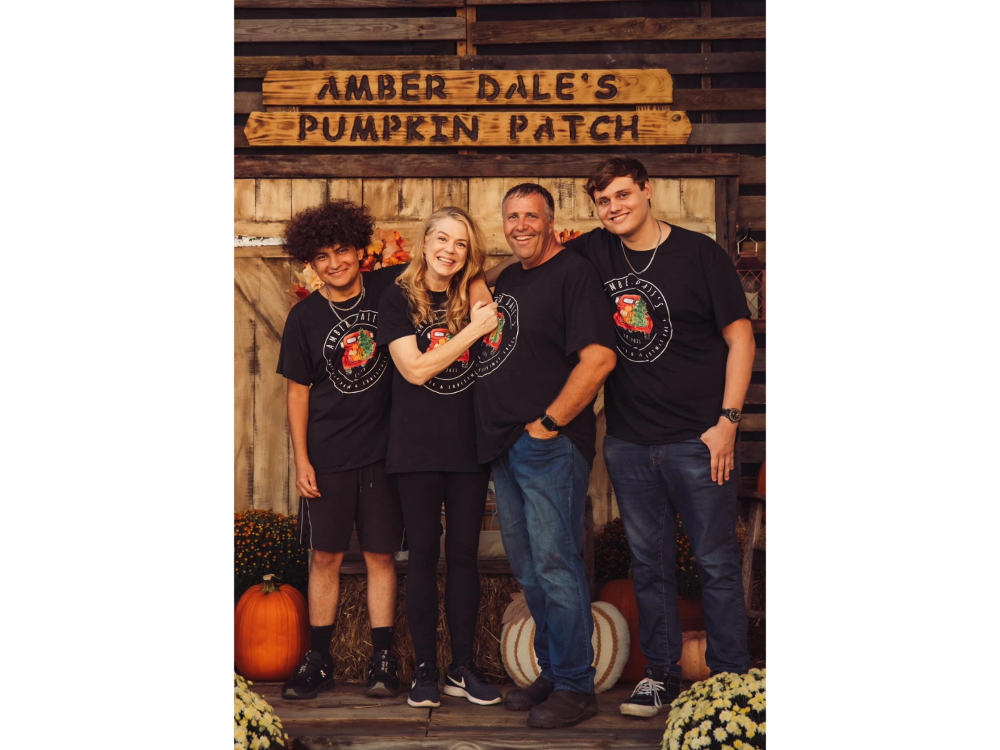

01 / FIND YOUR FAVORITE
Pumpkins & hardy mums
Bring a little of the patch home with pumpkins and hardy mums for your fall decorating.

Amber Dale’sPUMPKIN PATCH & CHRISTMAS TREES
FAMILY ROOTS. SEASONAL TRADITIONS.
Slow down. Pick a pumpkin. Stay for the moments.
Welcome to our family’s little corner of Wilmington.
YOUR FALL STARTS HERE
A pumpkin for the porch, mums for the yard, and a photo you’ll come back to year after year. Come make the season your own.

Bring a little of the patch home with pumpkins and hardy mums for your fall decorating.

Gather your favorite people and make a memory among the patch’s seasonal photo displays.

The original site lists weekend events. Check our Facebook page for current announcements and details.
See Facebook updates ↗
OUR FAMILY, WELCOMING YOURS.MORE THAN A PUMPKIN PATCH
We’re Kevin and Kellie McDonald, and our sons are Brady and Gavin. What began as a small family dream became a place to celebrate the seasons together.
Amber Dale’s honors Kellie’s sister, Amber Dale Conatser, and her father, Dale Miller. The patch holds a special place in the family’s journey through grief, faith and healing.
The McDonald and Miller families have helped bring it to life, with love and hard work woven into the lot.
Kellie is a lifelong Wilmington resident. Kevin moved here from Philadelphia with his family more than 30 years ago, following his father’s retirement from the Marine Corps. Kevin and Kellie have been married since 1998. In 2025, Kevin retired after 33 years as a firefighter.
Service and faith are central to this first responder family. Kevin loves his tractor and takes on the building and hauling. Kellie loves animals; the family includes dogs Drake and Coco and a leopard gecko named Shiny. Brady enjoys history, archaeology, mountains and vinyl records. Gavin loves music, sneakers and making people laugh.
In October 2010, Kellie lost her sister Amber to an impaired driver; Amber’s husband suffered a traumatic brain injury. Kellie was at a pumpkin patch when Amber passed away. For years, fall brought renewed grief. Over time, another pumpkin patch became part of the family’s healing.
The name carries Amber’s memory and honors Dale Miller, the family patriarch. The family is grateful for everyone who has crossed the bridge, made a memory and helped keep Amber’s memory alive.
With gratitude, the McDonald Family
THE NEXT CHAPTER OF THE SEASON
Amber Dale’s is also home to Christmas trees. When the season turns, come back for another family tradition.
Tree availability, prices and Christmas opening dates are awaiting confirmation. Call or check Facebook before making the trip.
Ask about Christmas trees ↗WE’LL MEET YOU AT THE PATCH
Find us on North College Road in Wilmington. A little planning leaves more room for making memories.
The existing website displays 10 a.m.–8 p.m. and a fall-opening announcement. A dated season calendar and complete weekly hours have not been verified.
Call to confirm today’s hours ↗Admission, pumpkin and mum prices, photo fees, and event dates are not published on the reviewed website. Contact the patch for current details.
Check the latest Facebook updates ↗A LITTLE HELP BEFORE YOUR VISIT
The website lists pumpkins, hardy mums, fall photo opportunities, weekend events and Christmas trees. Availability varies by season; call for current offerings.
Ticket requirements and admission or activity prices have not been verified. Please call (910) 912-6237 before visiting.
The family story mentions visitors bringing dogs and Kellie’s love of animals. The site does not publish a formal pet policy, so contact the patch to confirm current rules.
Parking arrangements, step-free routes, ground surfaces and restroom facilities are awaiting confirmation. Call or email to discuss your family’s needs before visiting.
GOOD PEOPLE. LITTLE MOMENTS. LASTING MEMORIES.